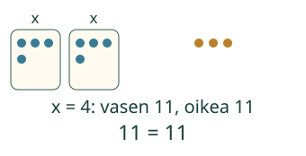
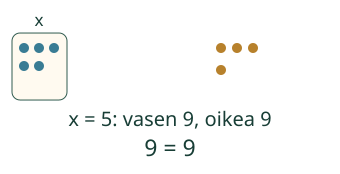

Aavan kaksi samanlaista pussia ja 3 nappia ovat 11. Kokeile x:ää.
Mikä tekee tästä yhtälön?
= ja tuntematon kuuluvat yhteen

Tuntematon saa olla myös oikealla

Väärä kokeilu ei poista yhtälöä. Jos 9 = x + 4 ja kokeilet x = 6, saat 9 ≠ 10. Luku 6 ei ole ratkaisu; alkuperäinen yhtälö on silti sama.
Mieti: onko x + 4 jo yhtälö?
Katso perustelu
Siitä puuttuu = ja toinen puoli: se on lauseke. Merkinnässä 5 + 4 = 9 taas on vain tunnettuja lukuja. Tässä oppitunnissa etsimme nimenomaan yhtälöitä, joissa on tuntematon.
Kokeile itse
Uusi tilanne: kolme rasiaa
Kolme samanlaista rasiaa ja 2 irtomerkkiä sisältävät yhteensä 14 merkkiä: x + x + x + 2 = 14. Kun yhdessä rasiassa on 4, vasen on 4 + 4 + 4 + 2 = 14. Merkintä x + 3 + 2 = 14 sekoittaisi rasioiden määrän ja yhden rasian sisällön.
Lisää tutkittavaa
Merkinnässä x − x = 0 on = ja tuntematon. Kokeile x:n paikalle 0, 3 ja 8. Jokainen toimii: yhtälöllä ei aina ole vain yhtä ratkaisua. Pelkkä = ja x eivät lupaa yksikäsitteistä ratkaisua.
Lopuksi: kumpi sisältää sekä =-merkin että tuntemattoman: x + 2 vai 7 = x + 2? Miten kokeilisit, sopiiko x = 5?
Opettajalle ja ilman ruutua
Luokat 3–6. Vaadittu AND: M-ALG-04 ja M-ALG-05. Tässä rajaus on tuntemattoman sisältävä yhtälö; myös pelkkää numeerista yhtäsuuruutta kutsutaan matematiikassa yhtälöksi. Emme opeta, että kaikki yhtälöt vaativat x:n. Rakenne, luvun sijoituksen totuus ja ratkaisujen määrä erotetaan.
Kokoa samanlaiset pussit irtomerkeillä, merkitse tuntematon määrä x:llä ja vertaa kokonaismääriä. Kuvassa ei väitetä fyysistä massatasapainoa. Sama x tarkoittaa aina samaa lukua. Malli sallii 0–9, tilanteet ovat rajattuja kokonaislukutilanteita.
Tekstimuoto tukee x:ää, kokonaislukuvakioita 0–99, +/−, skalaarikertolaskua (2x, 2*x tai 2×x), sulkuja ja enintään yhtä =-merkkiä. Ei jakoa, potensseja, muita kirjaimia tai yleistä algebralaskinta. Luokittelu perustuu rakenteeseen myös silloin, kun lukuväite on epätosi tai x:t kumoutuvat. Yhteystarkistus hyväksyy samaratkaisuisten lineaaristen yhtälöiden ryhmittelyt, puolenvaihdon ja ratkaisumuodon; se ei väitä todistavansa koko tarinan merkintärakenteen itsenäistä rakentamista. Identiteetti x − x = 0 ei kuvaa yhden määrätyn pussiluvun tilannetta. Vihjeet ovat apua, ei oppilashistoriaa tai muodollista hallintapäätöstä.